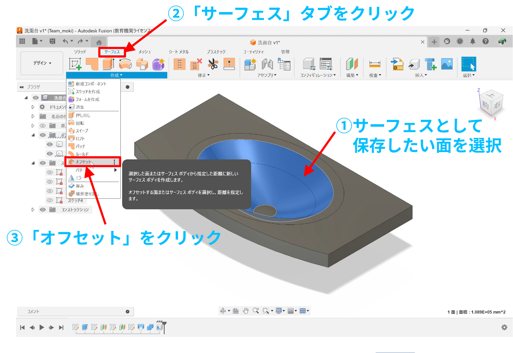
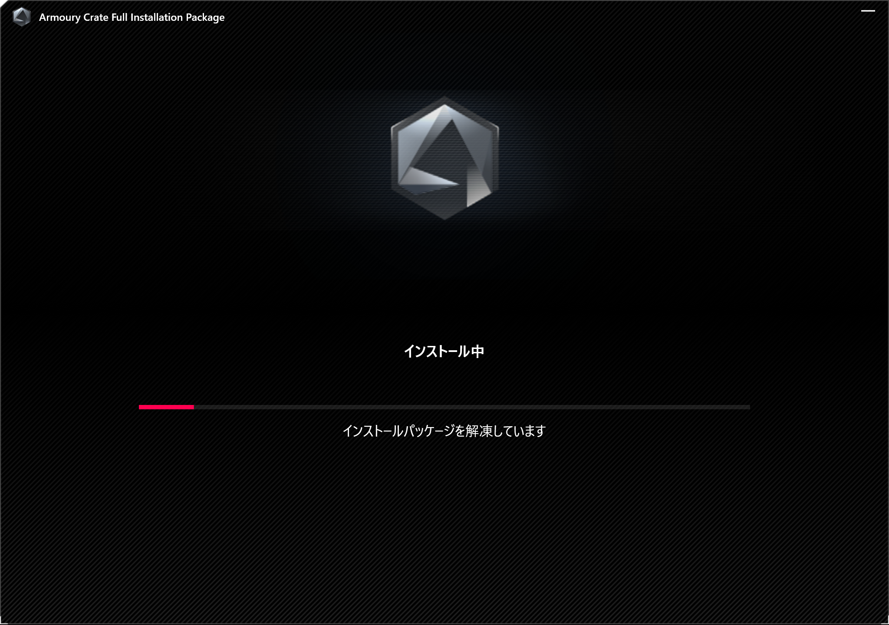
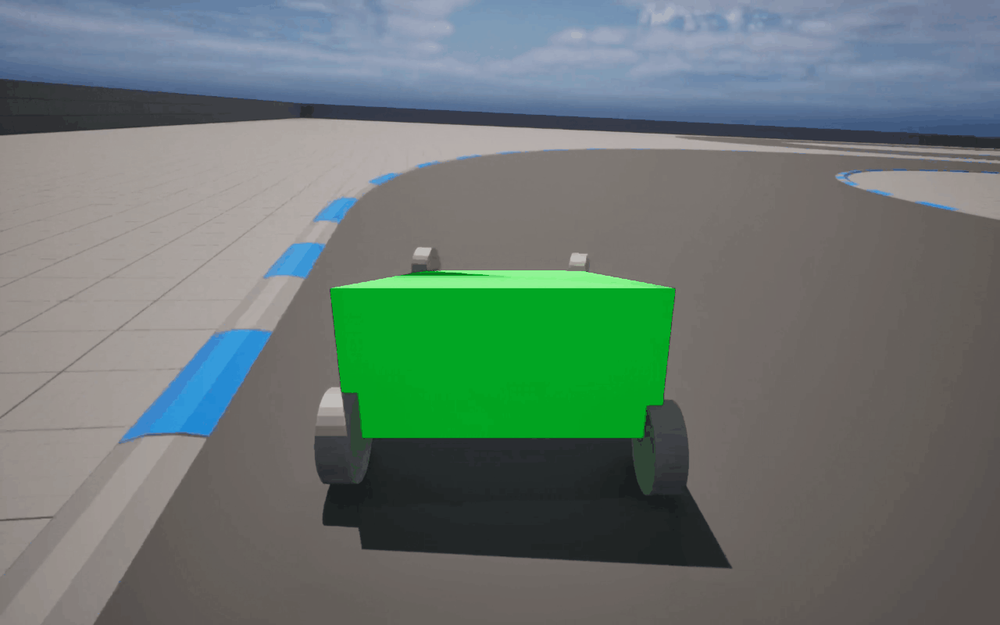
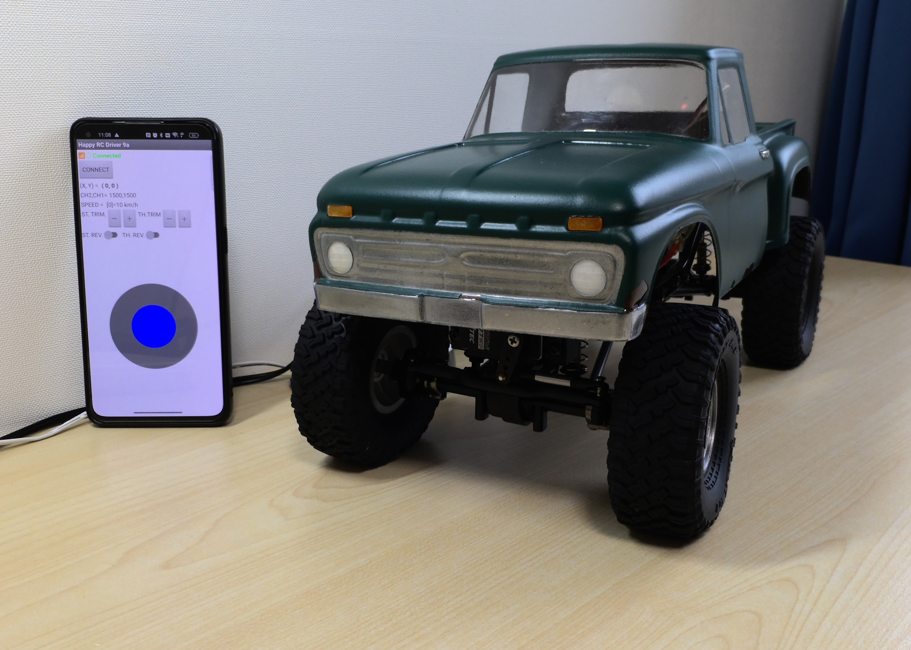
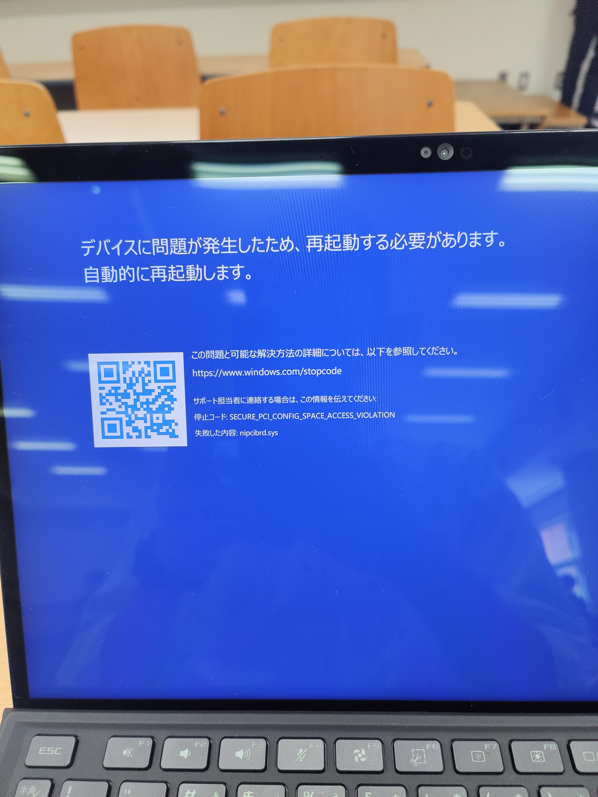

洗面台の3Dモデルを作ってみた
1. 動画 洗面台の3Dモデルを作成する様子を動画にまとめました！ ↓↓ 記事中では省略している一部始終（失敗している部分なども含めて）を載せています ↓↓ 2. 準備 まず定規を持って自 …
Read More
Fusion 360でソリッド表面からサーフェスを抽出して保存する方法
手順 FEM, FVMシミュレーションなどをやっていると、ソリッドからサーフェスだけを抽出したい場合があります。以下のような手順でやればいいです↓ エクスポートしたい面を選択（複数面を選択するとき …
Read More
OpenFOAMで基板の放熱シミュレーションみたいなのをやってみた [chtMultiRegionFoam]
～ 目次 ～ 1. やってみたこと 2. シミュレーションの概要 3. シミュレーション条件 3.1. メッシュ 3.1.1. 計算領域全体 3.1.2. cellZone（計算領域から区切っ …
Read More
LabVIEWで列名を使ってデータを抽出する方法
やりたいこと 2次元のデータを扱うときに、Pythonのpandasモジュールを使うとカラム（列）名指定してデータを抜き出すことができますが、LabVIEWでも同じようなことができたら便利だなと思いま …
Read More
Androidエミュレータにアプリがインストールされた直後にPCがフリーズ
起こった現象 Visual Studio CodeでFlutterの拡張機能を使ってアプリ開発を行い、開発したアプリを Android エミュレータにインストールしようとしたらPCがフリーズしまし …
Read More
ARMOURY CRATE のインストールが途中で止まってしまう？
起こった現象 ディスク容量がいっぱいになってしまったので、ASUS ROG Flow Z13 に新しいSSD（Nextorage SSD NN4ME-2TB3DN）に Windows 11 をクリー …
Read More
自作の車をゲーム内で動かす [Blender × Unreal Engine 5]
～ 目次 ～ 1. 本記事の目的 2. 使用ソフトウェア 3. 3Dモデルの作成 3.1. 作成するモデル 3.2. Blenderでモデリング 3.2.1. Blender …
Read More
Bluetooth モジュールでRCサーボ・ESCを制御したい [第15回-ジョイスティック実装]
～ 目次 ～ 1. 今回やったこと 2. 拡張機能開発の手順 2.1. Javaの勉強 2.2. 開発環境の構築 2.3. Java 8、Apache Antのインストール 2.4. 拡張機能の …
Read More
簡易な会計アプリを作ってみた
1. 開発の背景 一昨年の大学祭の模擬店ではフライドポテトを販売していましたが、会計がかなり大変でした。 そのときは、紙に正の字を書いて数量を計算するという方法を採用していました（去年の模擬店も同 …
Read More
LabVIEWをインストールしたらPCが起動しなくなった
起こった現象 研究で使用するNI製のソフトウェアLabVIEWをインストールし、昼ごはんから帰ってきてスリープから復帰しようとしたらPCが起動できなくなった（なぬ!? これはヤバい） ブルスクにな …
Read More